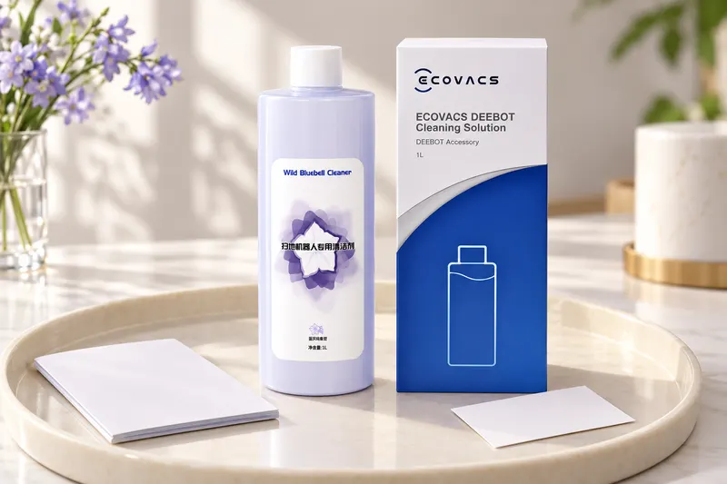

에코백스 (ECOVACS)
에코백스 세제 구매 전, DEEBOT과 WINBOT 제품부터 구분하세요
글·구성: 제이상점 · 기종별 1:1 호환 실물 점검 · 교체 주기 비교표 · 스마트스토어 패키지 안내

핵심 관리 · 선택 체크포인트
- 판매자 안내｜제이상점이 공식 자료와 현재 판매 구성을 확인해 작성했습니다.
- 에코백스 제품을 쓰고 있다면 DEEBOT과 WINBOT이라는 이름을 모두 본 적이 있을 수 있습니다.
- 상품 상세 이미지를 바탕으로 구성한 세제 병·포장 예시입니다.
- 오늘은 에코백스 세제를 주문하기 전 제품군을 구분하는 방법과, 수령 뒤 확인할 라벨 항목을 정리했습니다.
- DEEBOT과 WINBOT은 어디를 청소하나요?
실물 부품 디테일 · 관리 구성 이미지




부품 규격 · 점검 기준표
| 먼저 확인할 것 | 구매 전에 남겨둘 정보 |
|---|---|
| 제품군 | DEEBOT인지 WINBOT인지 |
| 전체 모델명 | T80·X8 등 시리즈 뒤의 상세 표기 |
| 사용 설명서 | 해당 모델의 세정액 종류·투입 위치 안내 |
| 받은 세제 라벨 | 제품명·용량·용도·사용량·보관 방법 |
💡 교체 주기가 겹치는 필터·브러시·물걸레·더스트백은 단품 배송비를 여러 번 내기보다 에코백스 세제 세정제 기간별 세트(3개월·6개월·1년)로 미리 구비해 두면 물세척 후 24시간 교대 건조까지 끊김 없이 관리할 수 있습니다.
자주 묻는 질문 (FAQ)
Q. 에코백스 세제 구매 전 관리 시 '제품군'은 어떻게 점검하나요?
A. DEEBOT인지 WINBOT인지
Q. 에코백스 세제 구매 전 관리 시 '전체 모델명'은 어떻게 점검하나요?
A. T80·X8 등 시리즈 뒤의 상세 표기
Q. 에코백스 세제 구매 전 관리 시 '사용 설명서'은 어떻게 점검하나요?
A. 해당 모델의 세정액 종류·투입 위치 안내
제이상점 1:1 검수 추천 패키지 · 구매 안내
☑️ 주문 전 확인해 두면 좋은 제이상점 안심 포인트
· 기종별 1:1 전용 규격 검수: 모델명·연식에 맞는 호환·정품 구성을 검수해 오주문 불안을 줄였습니다.
· 해외직배송 미리 주문 팁: 중국 구매대행·해외직배송 상품이므로 마지막 여분 1개를 꺼내 쓰는 시점에 개인통관고유부호와 함께 여유 있게 주문해 두시면 훨씬 경제적인 비용으로 끊김 없이 교체하실 수 있습니다.
· 기종별 1:1 전용 규격 검수: 모델명·연식에 맞는 호환·정품 구성을 검수해 오주문 불안을 줄였습니다.
· 해외직배송 미리 주문 팁: 중국 구매대행·해외직배송 상품이므로 마지막 여분 1개를 꺼내 쓰는 시점에 개인통관고유부호와 함께 여유 있게 주문해 두시면 훨씬 경제적인 비용으로 끊김 없이 교체하실 수 있습니다.
📖 더 많은 가정 내 사용 스토리와 상세 후기가 궁금하시다면
📱 네이버 블로그 모바일 원문 보기 ↗